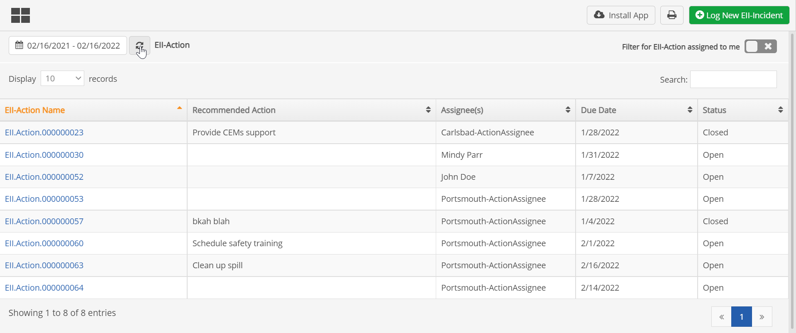
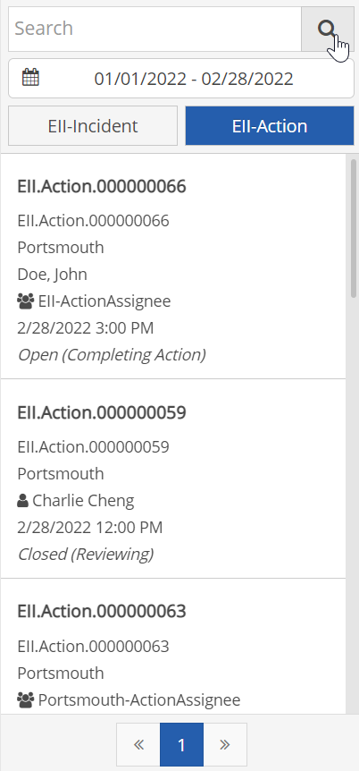
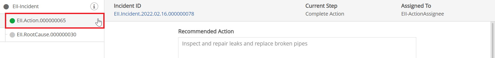

If you receive an email notification that you were assigned an action, you can click a link in the email to go directly to the form in the App to complete it.
If you do not have an email notification, you can search for actions in the App by various methods. The easiest way to find actions assigned to you is with the My Actions button.
Actions are commonly the secondary workflow items configured for the App. However, in some custom Advanced Workflows (WAB) solutions they may be called something else.
To find Actions assigned to you:
Select My Actions from the main menu button.
Set search options, as desired:
Dates: Set the date filter to include the desired due dates of the actions. Click the Refresh button next to the date to apply the date filter.
Assigned to: To filter only for those actions assigned to you, make sure the "Filter for Corrective Actions assigned to me" option is on. Select OFF if you want to see actions assigned to others as well
Text search: Use the Search field on the right to search for text. The search includes all of the visible text fields in the table.

You can sort by any column by clicking the column header.
To search for all Actions:
Select Search from the main menu button. Then select the Actions tab.
Set search options as desired:
Dates: Search by due date using the From/To dates. To clear a date filter, select the date field and click Clear at the bottom of the calendar popup.
Text Search: Search by any of the visible text fields in the summary using the text search.
All actions matching the search criteria are displayed in the left pane. Select any action to go directly to the action completion form.

To find actions associated with a specific Item:
Select Search from the main menu button. Browse or use the search to find and select the primary item record to open it.
Actions may be found in two ways, according to how they are associated in the workflow process:
Actions created from the primary App workflow are displayed as tabs from the main record and can be viewed or edited by selecting the Action tab.

Actions created for a secondary process workflow are displayed inline on the tab for that sub-process. They can be viewed or edited from the associated sub-process tab. See Sub-Processes.